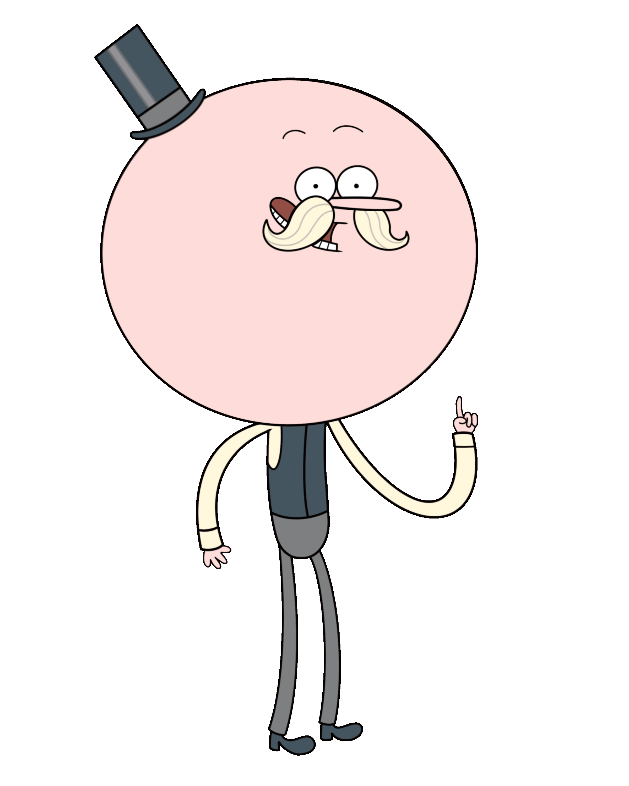

Personaggi Principali
Pops
Pops è un lecca-lecca vivente, molto ingenuo e gentile. È il figlio del proprietario del parco, ma lascia a Benson la gestione. Alla fine della serie si sacrifica per salvare il mondo, rivelandosi essere un essere di grande potere chiamato Mega Kranus.